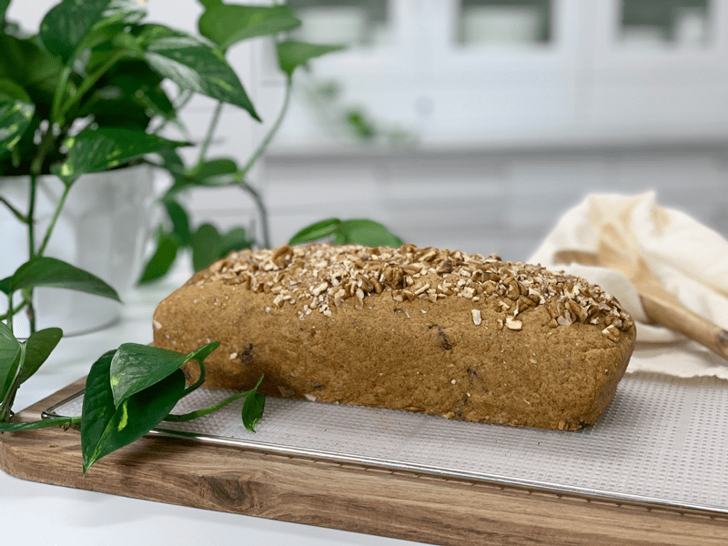
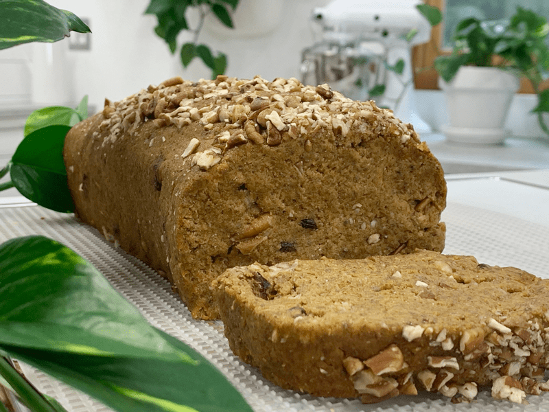
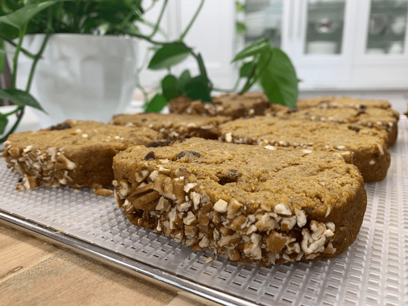

Pecan Pumpkin Raisin Bread
– raw, vegan, gluten-free –
I will never grow tired of bread… raw bread, that is. It is always such a treat when I make it and when it disappears quickly. This particular bread is one to enjoyed plain. It doesn’t need to be surrounded by copious amounts of food or spreads. The flavor and texture are quite satisfying all by themselves. I always feel the need to explain some of the ingredients that I use in my bread recipes, because questions always come up, especially from new people visiting my site.

The main ingredient that I use for the texture and structure of the bread is almond pulp. I find it perfect for loaves of bread because it is so light and airy. A person could use any nut pulp with a slight alteration in flavor. For those of you who don’t wish to make nut milk (which supplies us with the nut pulp), you can always try using the following; carrot pulp, buckwheat or oat flour, ground nuts, shredded zucchini, and so forth. But each one of those ingredients will supply a different taste and texture… thus creating a whole new recipe.
For the pumpkin puree, you can use raw or canned. It will depend on your personal decision to eat all raw or not and also due to availability. Should you choose to make your own raw pumpkin puree, you can read (here) on how to do it. For canned, always look for organic, with BPA-free cans and make sure that there aren’t any other ingredients, just plain ole’ pumpkin. You can also use carrots or squash as a replacement.

The date paste, chia seeds, and psyllium husks act as binders. The psyllium has health benefits but also gives the bread a “sponginess” that completes the bread-like texture. Remember that each component in this recipe offers excellent health benefits. I work hard to find a balance in flavor, texture, and nutrients.

If you don’t have raisins, that quite ok, go ahead and use cranberries or any other diced up dried fruit. Lastly, pumpkin spice, if you don’t have this spice jar in the pantry, no worries, you can make it yourself. I have added to the ingredient what you will need to use in its place. I hope that you thoroughly enjoy this recipe. Many blessings, amie sue P.S. you can thank me now for the wonderful aroma that will be omitted from your dehydrator. :)
 Ingredients:
Ingredients:
yields 1 – 10″ loaf pan
If you don’t have pumpkin spice, add the following:
- 1 tsp ground cinnamon
- 1/4 tsp ground nutmeg
- 1/4 tsp ground ginger
- 1/8 tsp ground cloves
Preparation:
- In a food processor, fitted with the “S” blade, combine the pumpkin puree, date paste, chia seeds, maple syrup, psyllium, cinnamon, pumpkin spice, and salt.
- Process until everything is well mixed.
- Place in a large bowl.
- Hand mix in the almond pulp, raisins, and pecans.
- Line a bread pan with plastic wrap for the ease of removing the bread once formed.
- Place the bread batter in the pan and shape the top into an arch.
- Let the bread sit for 15-30 minutes; this will give the psyllium and chia seeds time to bind all the ingredients together.
- Remove from the pan and place on the mesh sheet that comes with the dehydrator.
- Dry at 145 degrees (F) for 1 hour.
- Remove the bread and slice into 1″ thickness or whatever thickness you want.
- Place on the mesh sheets and continue to dry until it reaches the dryness level that you want.
- I like my slices of bread more on the moist side.
- Reduce to 115 degrees (F) for 4-6 hours. The bread will be moist but have a nice outer crust.
- Dry times will always vary on the amount of moisture your bread starts out with, the model you use, how full it is, the humidity in the air, and/or even the climate.
- So always keep a watchful eye on the bread and remove it once you find the perfect texture for you.
- Store in an airtight container/bag for 3-5 days. I like to wrap my bread in individual slices and freeze them.
The Institute of Culinary Ingredients™
- To learn more about maple syrup by clicking (here).
- What is Himalayan pink salt, and does it matter? Click (here) to read more about it.
- Learn how to grind flaxseeds for ultimate freshness and nutrition. Click (here).
- How does psyllium work in a recipe? Learn more (here).
- Click (here) to learn why I use stevia.
Culinary Explanations:
- Why do I start the dehydrator at 145 degrees (F)? Click (here) to learn the reason behind this.
- When working with fresh ingredients, it is essential to taste test as you build a recipe. Learn why (here).
- Don’t own a dehydrator? Learn how to use your oven (here). I do, however honestly believe that it is a worthwhile investment. Click (here) to learn what I use.

© AmieSue.com